Day 1｜9月26日（六）
抵達大阪，輕鬆安頓
中華航空 CI 158｜起飛 15:15 → 抵達 19:00（飛行時間約 3hr45min）
導遊型交通指引：
- 在關西機場航廈跟隨指標前往南海電鐵（Nankai Electric Railway）車站
- 使用 ICOCA 或刷信用卡進站，搭乘南海電鐵的「空港急行」或「Rapi:t 特急」
- 搭乘約 40-45 分鐘直達「新今宮站」（南海電鐵官網：www.nankai.co.jp）
住一難波南2號店（Apartment Hotel 11 Namba Minami Shin-Imamiya II）
從「新今宮站」步行約 5-8 分鐘，抵達飯店辦理入住。
📍 住宿時段：9/26 16:00 check-in ～ 9/29 10:00 check-out
📍 今日相關地圖
Day 2｜9月27日（日）
大阪經典巡禮與商圈採購
導遊型交通指引：
- 步行至地鐵「大國町站」，刷 ICOCA 搭乘御堂筋線（往千里中央方向），搭 1 站至「本町站」下車
- 在本站依照指標轉乘地鐵中央線（往森之宮・長田方向），搭 2 站至「谷町四丁目站」下車
- 從谷町四丁目站出站（推薦走 1B 或 9 號出口），經大手門、櫻門步行約 20 分鐘（約 1.6 公里）到天守閣
現在的天守閣是 1931 年竣工、歷史上第三代的天守閣（鋼骨鋼筋混凝土造），內部是歷史博物館。照下面的順路走一圈，12:45 從西之丸庭園往回走，才趕得上 13:00 的地鐵。
- 11:00大手門（重要文化財）— 大阪城的正門，1628 年創建；門內的多聞櫓是城內唯一現存的一座
- 11:05櫻門與蛸石（櫻門為重要文化財，1887 年依德川時代的樣式重建）— 門內的「蛸石」是城內最大的石頭，表面約 36 疊
- 11:15天守閣 — 歷史博物館＋8 樓展望台；大人 ¥1,200、高中・大學生 ¥600、國中以下免費，9:00～18:00（入館至 17:30）
- 12:05豐臣石垣館（2025 年開館）— 走到地下看 1984 年挖出來的豐臣時代石垣；用同一張天守閣門票入館
- 12:25西之丸庭園 — 隔著護城河看天守閣的草坪庭園（約 6.5 公頃）；大人 ¥200，9:00～17:00，週一休（9/27 週日有開）
- 12:45經大手門走回谷町四丁目站（約 13 分）
⏱ 約 2 小時（11:00～12:58）｜🎫 天守閣＋豐臣石垣館 ¥1,200、西之丸庭園 ¥200｜📍 谷町四丁目站進出｜步行共約 3.3 km
從豐臣石垣館直接經櫻門、大手門走回谷町四丁目站，少排 20 分鐘。
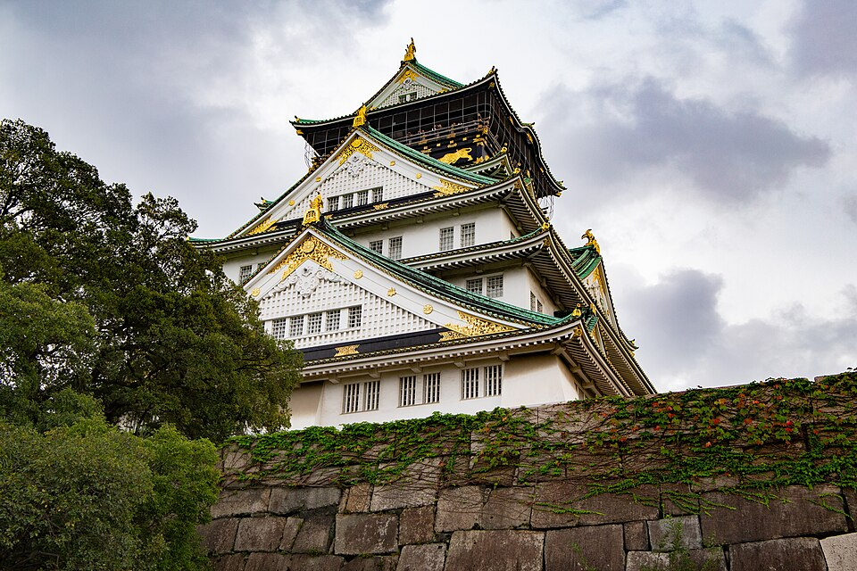
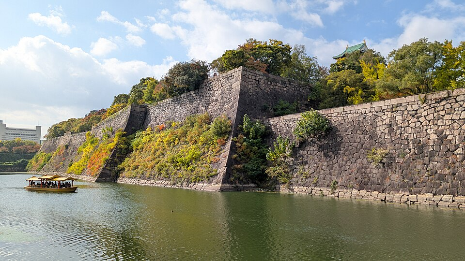
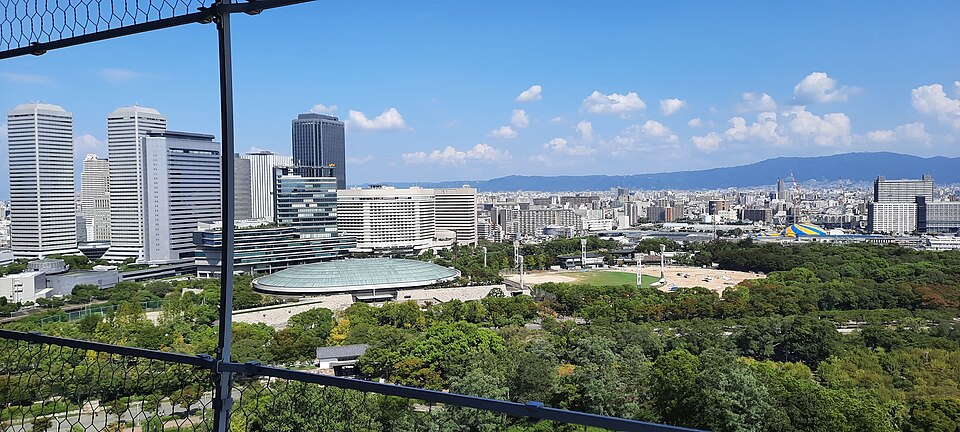
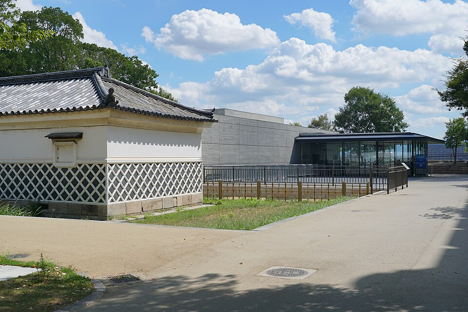
📴 離線時看不到地圖，回到有網路的地方再開，或用下方的地圖連結。
地圖：© OpenStreetMap contributors，步行路徑由 OSRM 計算｜照片：Wikimedia Commons，作者與授權標在各張照片下方
B 計畫B｜大阪歷史博物館大阪歴史博物館 ☔ 下雨，或提早逛完時
就在 13:00 要搭車的谷町四丁目站旁，室內展覽不怕下雨，10 樓還能從窗戶眺望大阪城。9/27 是週日，照常開館（週二才休）。官網說常設展平均要 1～1.5 小時，兩個都去的話，午餐會跟著往後延。
🎫 常設展 大人 ¥600（特別展另計）
⏱ 常設展平均 1-1.5 小時
📍 大阪市中央区大手前4-1-32（地鐵谷町四丁目站 2・9 號出口）
導遊型交通指引：
- 從谷町四丁目站搭乘地鐵谷町線至「谷町九丁目站」
- 站內轉乘地鐵千日前線至「日本橋站」
- 出站後步行約 2 分鐘即可抵達黑門市場
從地鐵「心齋橋站」搭乘御堂筋線（往千里中央方向）直達「梅田站」，車程約 6 分鐘。
從地鐵「東梅田站」搭乘谷町線（往大日方向）至「天神橋筋六丁目站」，車程約 4 分鐘。
📍 今日相關地圖
Day 3｜9月28日（一）
國寶名城與神戶牛饗宴
導遊型交通指引：
- 從「大國町站」搭乘地鐵御堂筋線至「梅田站」
- 出站後步行至 JR 大阪站
- 搭乘 09:30 發車的 JR 京都線 / 神戶線 新快速（往姬路方向），車程約 65 分鐘（免轉車，直達姬路站）
國寶、世界文化遺產，外牆白色的「白鷺城」。官方的參觀時間是天守群加西之丸約 1.5～2 小時，照下面的順路先逛西之丸、再上天守，12:45 回到大手門。
- 10:50大手門 — 從 JR 姬路站沿大手前通走過來約 15 分鐘
- 10:55入城口・菱之門 — 買票入城；菱之門是守住二之丸入口的櫓門，旁邊是三國堀
- 11:00西之丸 百間廊下 — 千姬的侍女們住過的長屋，一路走到底是化粧櫓（千姬的休息所）
- 11:35經「い」～「ほ」各道門往天守走
- 11:45大天守 — 外觀 5 重、內部地下 1 樓・地上 6 樓；樓梯窄，人多時會排隊
- 12:30備前丸 — 大天守正下方的廣場（池田輝政居所的遺址），拍天守的好位置
- 12:40順著出口走回大手門，12:50 往 JR 姬路站
⏱ 約 2 小時（10:50～12:50）｜🕐 9:00-17:00（最終入城 16:00）｜📍 地址：兵庫縣姬路市本町 68
🎫 門票 ¥2,500（18 歲以上、非姬路市民；2026/3/1 起，原 ¥1,000）｜未滿 18 歲免費｜好古園共通券 ¥2,600
城旁的日式庭園好古園要另外排時間；12:50 就要往車站走，這次只逛城內，共通券不用買。
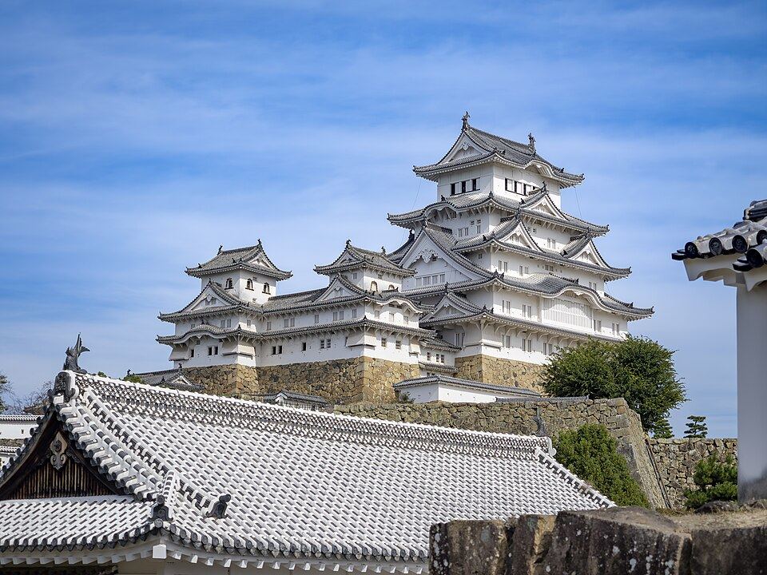
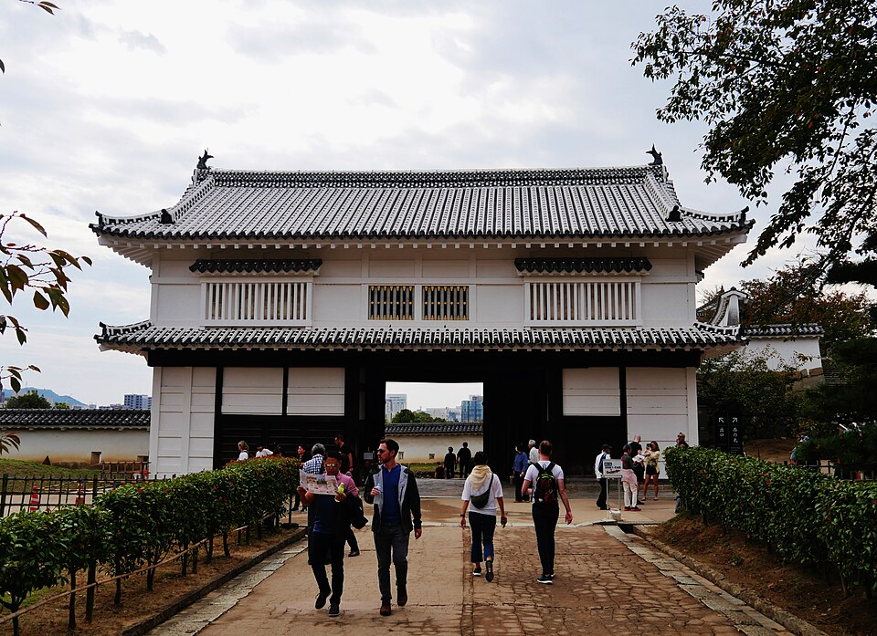
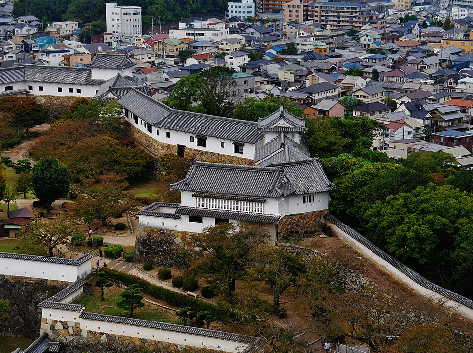
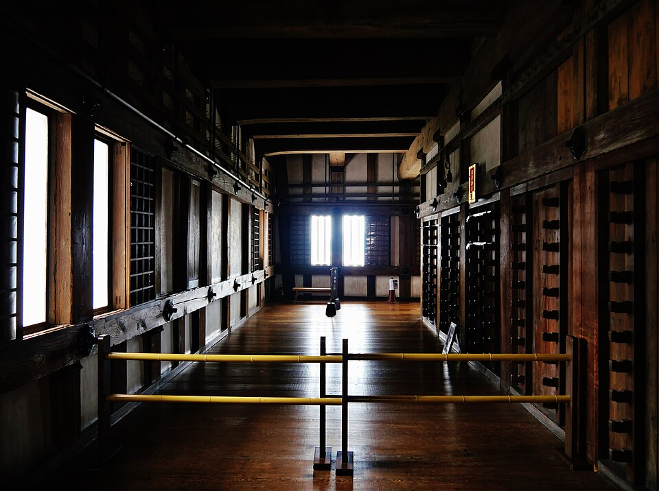
📴 離線時看不到地圖，回到有網路的地方再開，或用下方的地圖連結。
地圖：© OpenStreetMap contributors，步行路徑由 OSRM 計算｜照片：Wikimedia Commons，作者與授權標在各張照片下方
導遊型交通指引：
- 返回 JR 姬路站
- 搭乘 JR 新快速（往京都 / 米原方向），車程約 40 分鐘直達 JR「三之宮站」
- 出站後步行約 5 分鐘抵達餐廳
Mouriya（モーリヤ）三宮店｜頂級 A5 神戶牛鐵板燒
📍 地址：兵庫縣神戶市中央區北長狹通 1-9-9 第一岸大樓 3F
🕐 11:00-22:00（Last Order 21:00）｜📞 +81 78-321-1990
⭐ 已預約 14:00 時段｜官網：www.mouriya.co.jp
不是單一景點，而是十餘棟可入內參觀的洋館各自收費。多數 9:00-18:00，單館門票約 ¥500～1,500，另有多館共通券較划算。
只想拍街景、走坡道感受氛圍的話不必買票。
行程 16:00 開始散策、18:45 吃晚餐。9/28 神戶日落 17:48，建議先逛北野（坡道多、較耗時），17:00 前後再下山到神戶港，才來得及在 Mosaic 一帶看夕陽。
導遊型交通指引：
- 晚餐後走到車站：三宮的グリル一平、赤萬、ひの → JR 三ノ宮站；元町的楽関記 → JR 元町站（約 2 分鐘）
- 三ノ宮站搭 JR 神戶線 新快速到「大阪站」（約 21 分鐘）。元町站新快速不停，搭快速直達大阪（約 30 分鐘），或先搭 1 站到三ノ宮換新快速
- 大阪站同站轉乘 JR 大阪環狀線「内回り」（往西九条・弁天町）到「新今宮站」（約 14～16 分鐘）
- 新今宮站步行約 5 分鐘回飯店。三ノ宮出發全程約 46 分鐘、IC ¥750；全程都是 JR，大阪站不用出站
9/28（週一）班次參考：三ノ宮 20:22 新快速 → 大阪 20:43，轉環狀線 20:54 → 新今宮 21:08
Day 4｜9月29日（二）
古都奈良與藝術之夜（移動日）
導遊型交通指引：
- 飯店退房後，從近鐵難波站（或大阪難波站）搭乘近鐵奈良線（快速急行）直達終點站「近鐵奈良站」
- 車程約 40 分鐘
將行李寄放於近鐵奈良站內的大型置物櫃，步行約 10 分鐘進入奈良公園區域。
把行李寄放在近鐵奈良站後出發，往東走進奈良公園，路邊到處是鹿。順路是東大寺 → 二月堂 → 春日大社，12:35 從春日大社往回走去吃午餐。
- 10:20從近鐵奈良站往東走到東大寺（約 20 分）— 沿路就是奈良公園；鹿仙貝 1 束 10 片 ¥200，路邊攤與伴手禮店都有賣
- 10:40東大寺 南大門 — 鎌倉時代重建的代表作，兩側是運慶、快慶等人雕的金剛力士像（國寶）
- 10:50東大寺 大佛殿 — 供奉「奈良大佛」盧舍那佛坐像；大人 ¥800，4～10 月 7:30～17:30
- 11:35二月堂 — 江戶時代重建，24 小時開放、免費；舞台上可以俯瞰大佛殿的屋頂與奈良市街
- 11:55往南走到春日大社（約 17 分）— 參道兩旁都是石燈籠，境內的燈籠約 3,000 座
- 12:10春日大社 御本殿特別參拜 — 走進掛滿釣燈籠的回廊，到中門前參拜；¥700，受理 9:00～16:00
- 12:35從春日大社往近鐵奈良站方向走去吃午餐（約 22～27 分）
⏱ 約 2.5 小時（10:20～13:00）｜🎫 東大寺大佛殿 ¥800、春日大社御本殿特別參拜 ¥700｜🕐 春日大社境內 3～10 月 6:30～17:30｜步行到春日大社約 3.8 km
奈良市觀光協會提醒：零食、麵包、蔬菜都不要給；一片一片快速地餵，餵完張開雙手讓鹿知道沒有了。
從近鐵奈良站往東走會經過興福寺；五重塔正在大修理，包在高 60 公尺的素屋根裡，看不到塔身（奈良縣 2026/3 公告）。
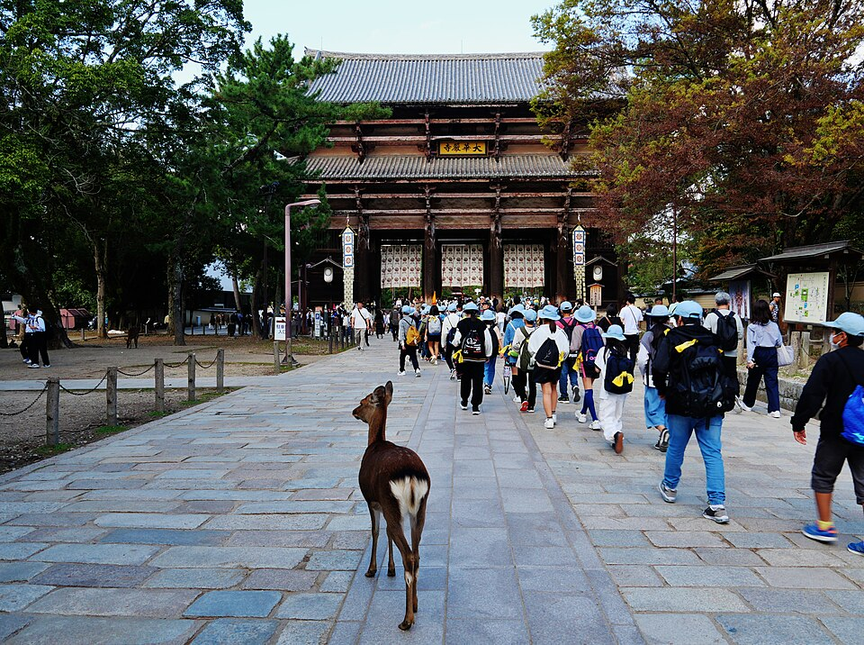
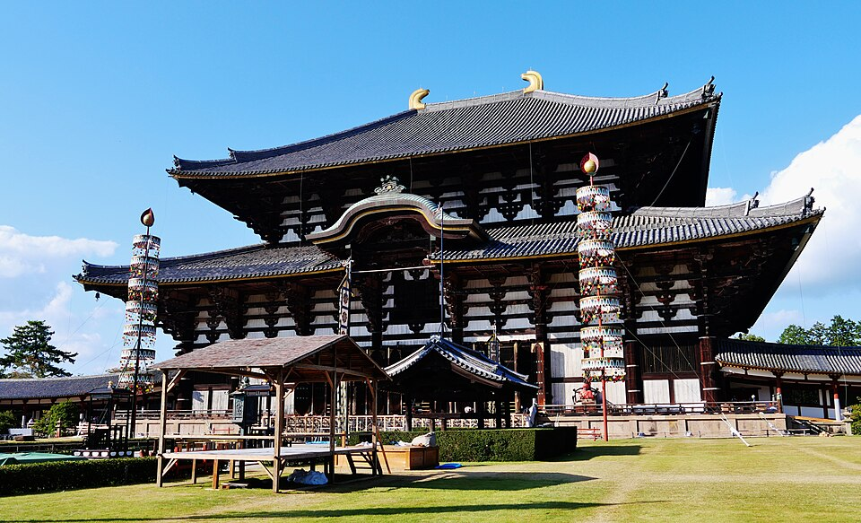
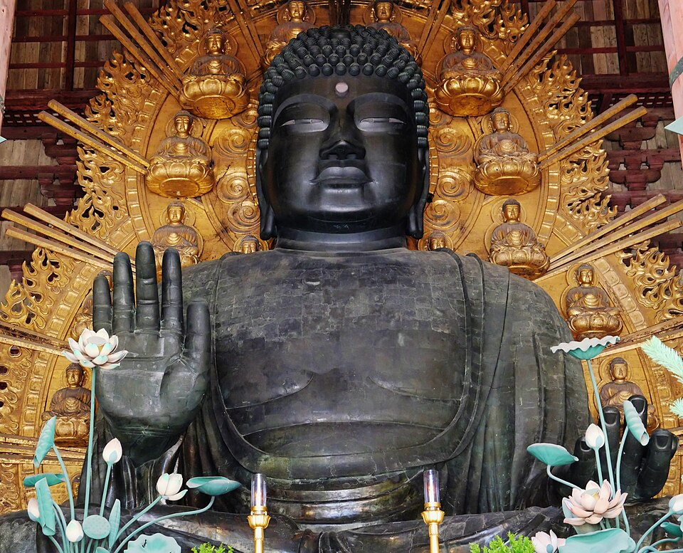
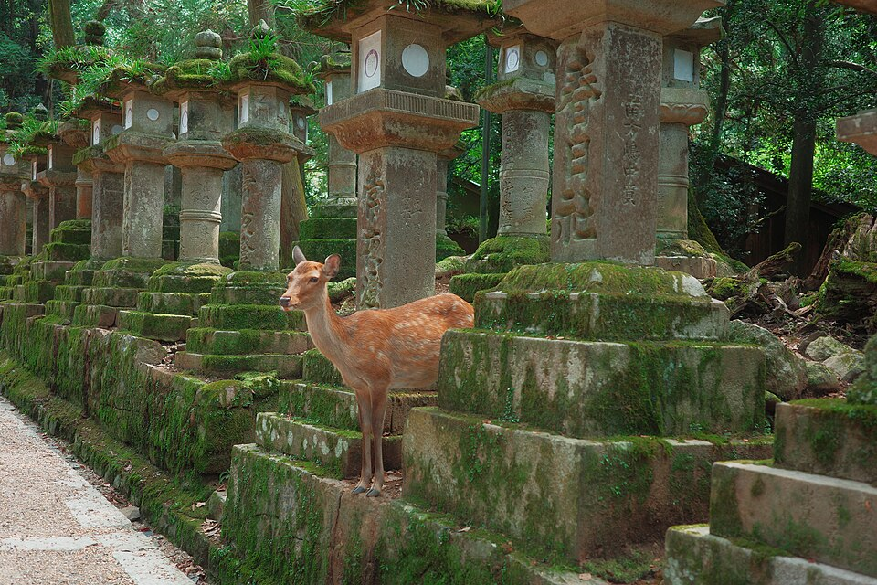
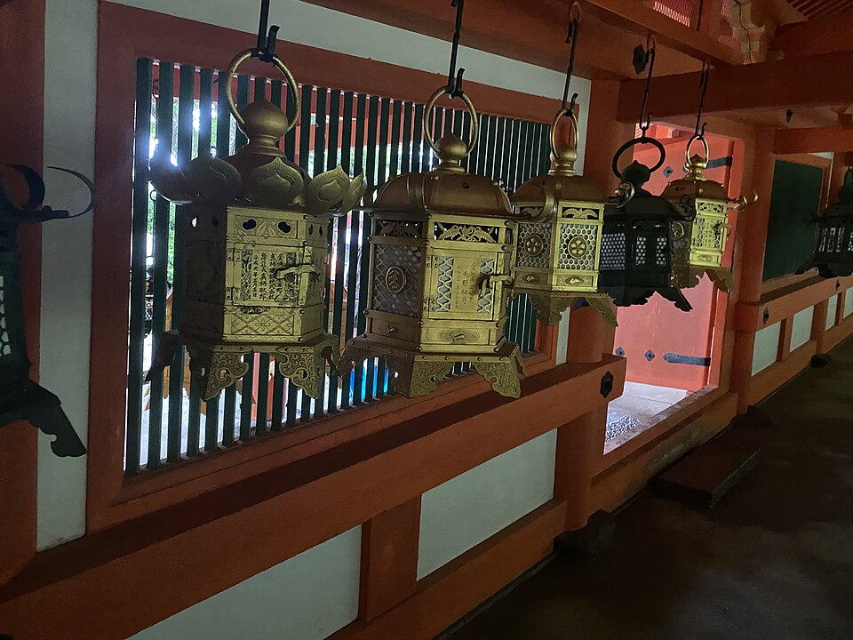
📴 離線時看不到地圖，回到有網路的地方再開，或用下方的地圖連結。
地圖：© OpenStreetMap contributors，步行路徑由 OSRM 計算｜照片：Wikimedia Commons，作者與授權標在各張照片下方
導遊型交通指引：
- 回近鐵奈良站取行李
- 搭乘近鐵特急（需提前劃位）直達「京都車站」，車程約 35 分鐘
⚠️ 近鐵特急需要提前預約座位，請預留足夠時間
抵達京都車站後，從八条口出站步行約 10 分鐘，抵達「京都蘭多爾公寓套房飯店」(Randor Residential Hotel Kyoto Suites) 辦理入住。
📍 地址：京都南區東九条北松ノ木町 38-1｜📍 住宿時段：9/29 15:00 check-in ～ 10/3 11:00 check-out
從飯店步行前往 teamLab 展場（約 15 分鐘），17:30 出發即可。
15:30 的景點若看完直接過去，走法寫在各方案裡；teamLab 是 18:00-18:30 進場。
18:00-18:30 時段進場｜日本最大數位藝術博物館
📍 地址：京都市南區東九条東岩本町 21-5（京都站八条東口步行 7 分）｜🕐 9:00-21:00（最終入場 19:30）
⭐ 已預約 18:00-18:30 時段進場｜⏱ 建議停留：2～2.5 小時（遊客心得多半是 2～3 小時），約 20:30 離開
官網公告「Living Crystallized Light」維護到 11 月上旬，9/29 看不到。
晚餐的 A 拉麵小路、B 山本まんぼ 都是 21:30 最後點餐，會很趕；改選 C へんこつ 或 D 京都タワーサンド（都營業到 23:00）。
Day 5｜9月30日（三）
千本鳥居與宇治任天堂朝聖
導遊型交通指引：
- 步行至 JR 京都車站，搭乘 JR 奈良線至「JR稻荷站」
- 車程約 5 分鐘，出站即是神社入口
神社背後的稻荷山（233 公尺）整座都是神域，千本鳥居就在上山的參道上。今天走到半山腰的四ツ辻就折返，上山約 30 分鐘；繞山頂一整圈要 2～2.5 小時，這次不走。
- 09:20樓門・本殿 — JR 稻荷站出來就是表參道，先在本殿參拜
- 09:35千本鳥居 — 江戶時代起，信眾奉納鳥居來表達祈願與感謝，一座座排成現在的「千本鳥居」
- 09:45奧社奉拜所（通稱「奧院」）— 旁邊的「おもかる石」：許願後抬起石燈籠頂端，比預想的輕就會實現
- 09:55熊鷹社・新池 — 從奧社奉拜所再往上約 10 分鐘
- 10:10四ツ辻 — 參道上數一數二的展望點，休息一下、看京都市區，然後折返
- 10:30原路下山，10:55 回到樓門，11:15 從 JR 稻荷站搭車去宇治
⏱ 約 2 小時（09:20～11:15）｜🕐 24 小時開放｜🎫 免費｜📍 地址：京都市伏見區深草藪之內町 68｜上四ツ辻一路都是階梯
四ツ辻到山頂（一ノ峰）來回約 1 小時；今天 11:15 要去宇治，走到四ツ辻就折返。
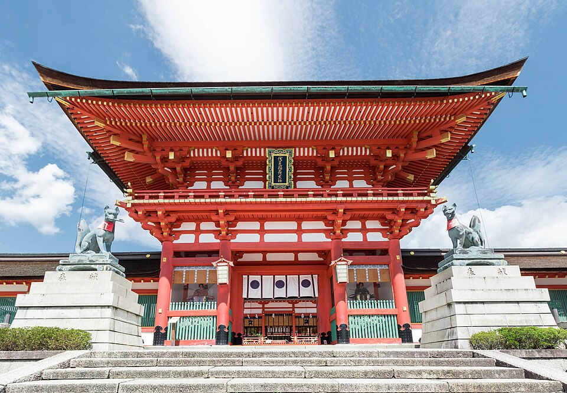
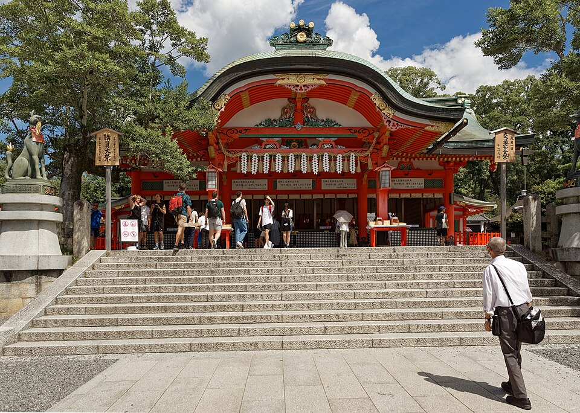
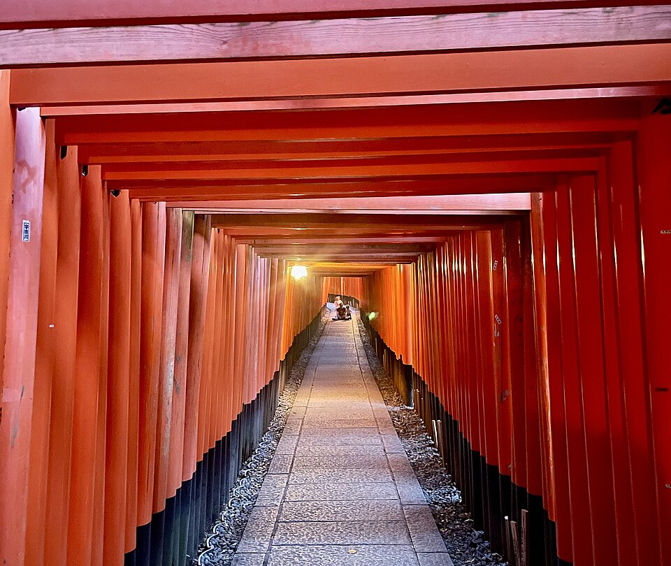
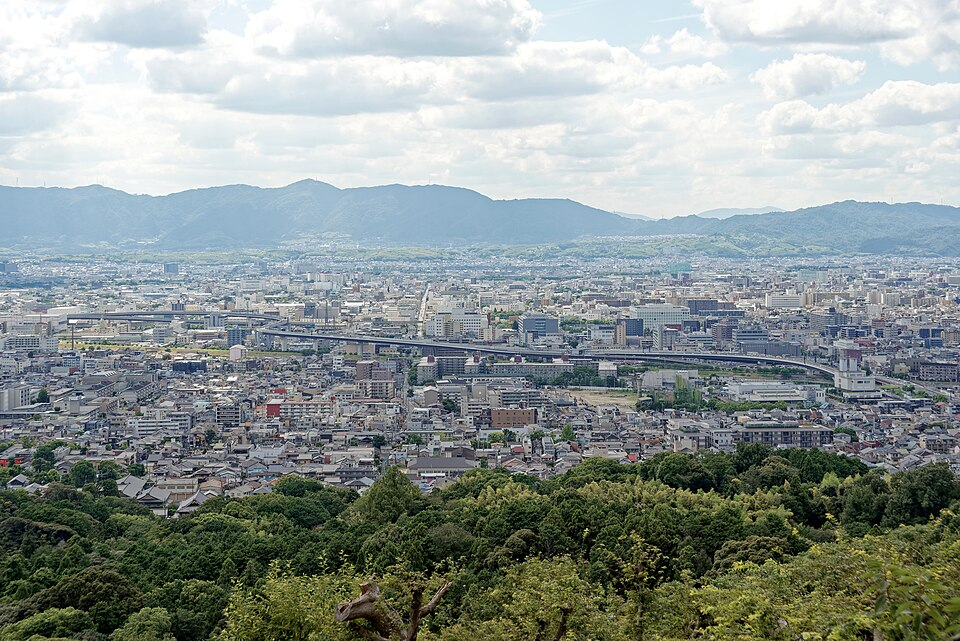
📴 離線時看不到地圖，回到有網路的地方再開，或用下方的地圖連結。
地圖：© OpenStreetMap contributors，步行路徑由 OSRM 計算｜照片：Wikimedia Commons，作者與授權標在各張照片下方
返回 JR 稻荷站，搭乘 JR 奈良線至「JR宇治站」，車程約 25 分鐘。
先在 JR 宇治站前吃午餐，再走宇治橋、平等院，經中之島過到對岸的宇治上神社，繞一圈回車站。平等院和宇治上神社都是世界文化遺產。
- 11:40午餐：伊藤久右衛門 JR 宇治站前店 — 車站旁，茶房有抹茶蕎麥麵（¥1,090 起）；10:00～18:00（LO 17:30），不定休
- 12:35宇治橋 — 從橋頭轉進平等院表參道
- 12:45平等院 — 一到先去登記鳳凰堂內部參拜（¥300，每 20 分鐘一梯、每梯 50 人），再逛庭園與鳳翔館
- 13:50朝霧橋 — 經宇治川的中之島過橋到東岸
- 13:55宇治上神社 — 本殿是日本最古的神社建築（國寶）；5:00～16:00、免費
- 14:10走回 JR 宇治站（約 17 分）
⏱ 約 2 小時 50 分（11:40～14:30）｜🕐 平等院 庭園 8:45-17:30（受付至 17:15）｜鳳翔館 9:00-17:00（受付至 16:45）｜步行共約 3.1 km
🎫 平等院 庭園＋鳳翔館 ¥700｜鳳凰堂內部參拜另加 ¥300｜宇治上神社免費
9:10 起在現場受理，先到先得，名額用完當天就不再受理；額滿的話只能從池邊看外觀。
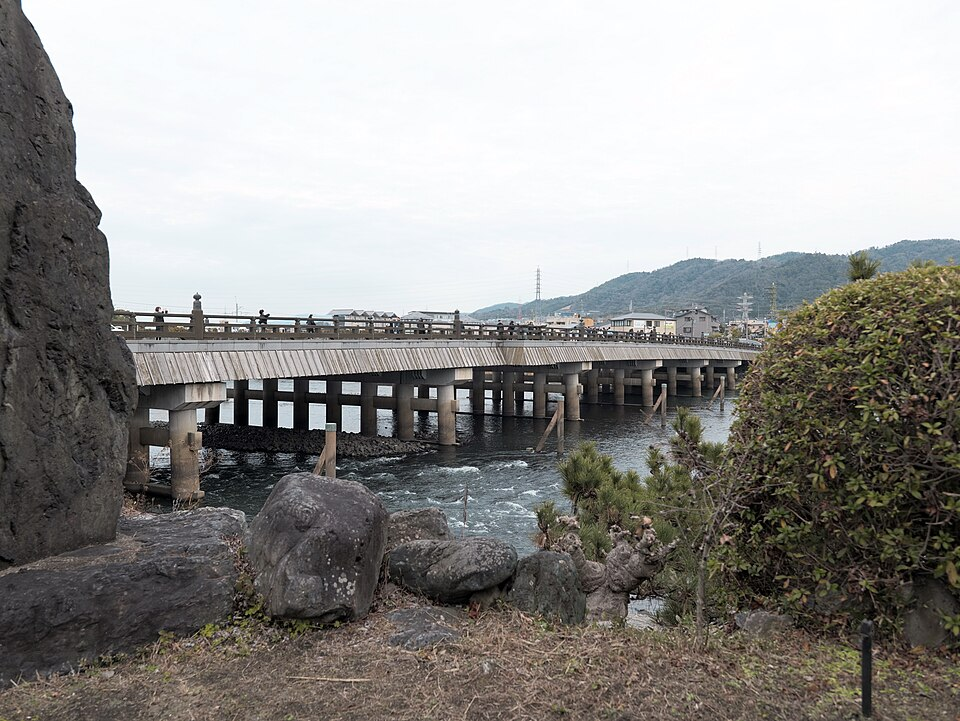
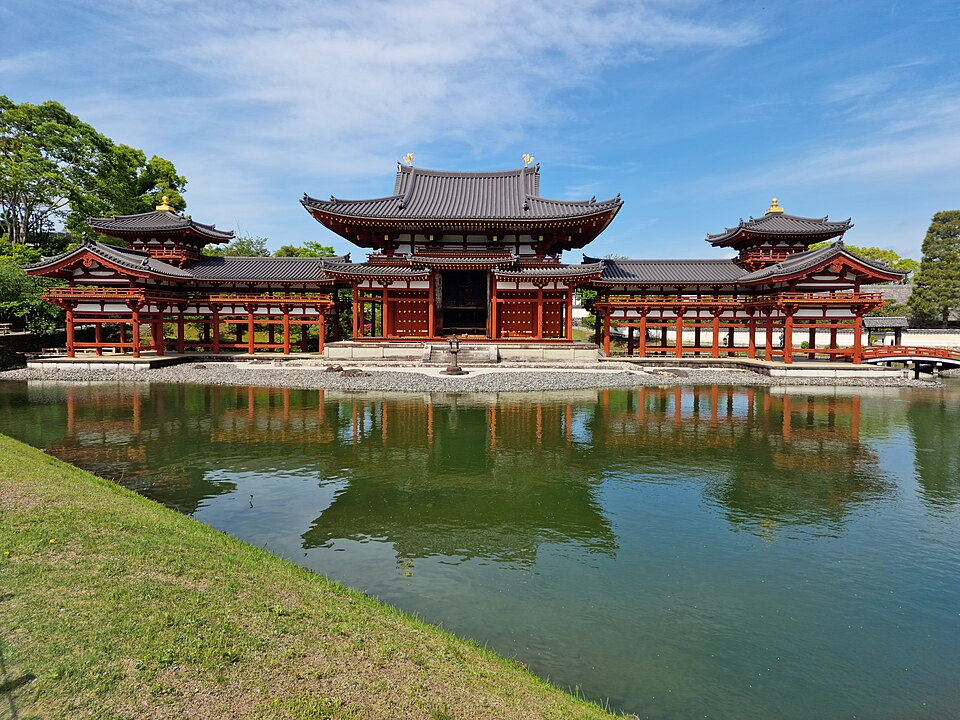
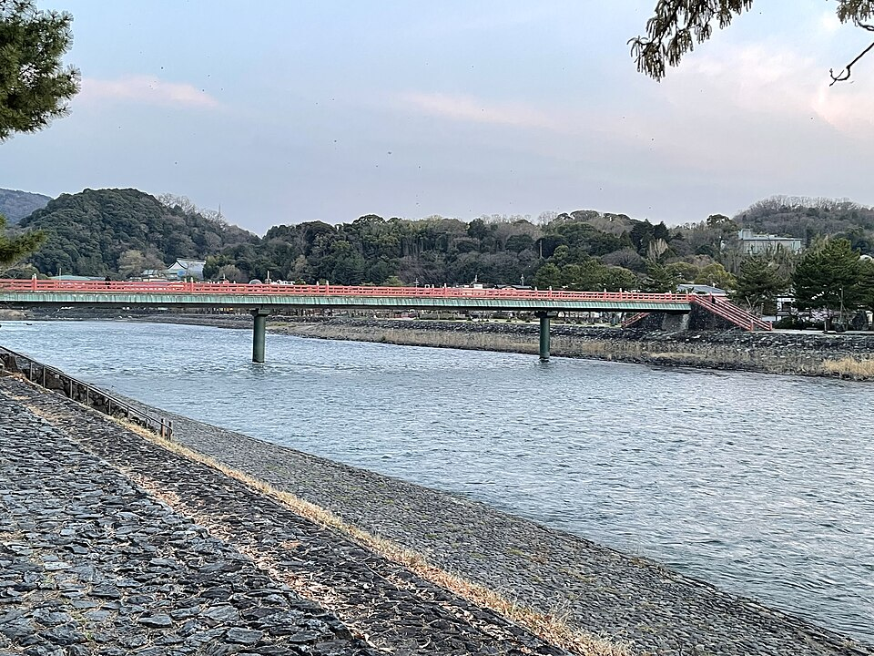
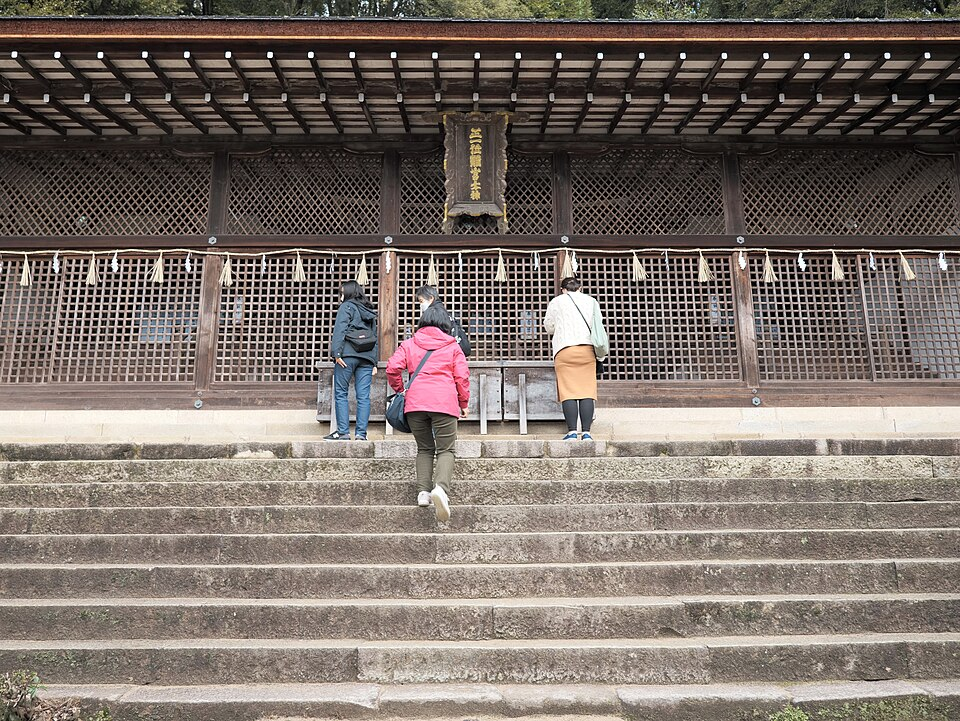
📴 離線時看不到地圖，回到有網路的地方再開，或用下方的地圖連結。
地圖：© OpenStreetMap contributors，步行路徑由 OSRM 計算｜照片：Wikimedia Commons，作者與授權標在各張照片下方
導遊型交通指引：
- 從 JR 宇治站搭乘 JR 奈良線僅 1 站至「JR小倉站」（車程 3 分鐘）
- 出站後步行約 8 分鐘即可抵達任天堂博物館
15:30-16:00 時段進場
📍 地址：京都府宇治市小倉町神樂田 56｜🕐 10:00-19:00｜休館：每週二（遇假日順延至週三）
⭐ 已預約 15:30-16:00 時段進場｜🎫 成人 ¥3,300（採事前抽選預約制）｜9/30 為週三，正常開館
閉館後步行至 JR 小倉站，搭乘 JR 奈良線返回「京都車站」。
📍 今日相關地圖
Day 6｜10月1日（四）
瑞饋祭、嵐山風華與絕品漢堡排
導遊型交通指引（9:00 開門時抵達）：
- 京都站搭地下鐵烏丸線到「北大路站」（第 7 站，約 15 分鐘）
- 北大路巴士總站的藍色乘車處 E，搭 25 或 205 號公車到「金閣寺道」（約 15 分鐘）
- 下車步行約 5 分鐘到金閣寺
也可以在京都站前直接搭 205 號公車到金閣寺道，但京都市觀光協會提醒這條線車上容易擁擠、常因塞車誤點，早上建議走地下鐵＋公車
世界文化遺產。早上整段留給金閣寺：9:00 開門就進去。一般參觀約 40～60 分鐘，這裡排了 2 小時，可以慢慢拍照、在茶所坐下來喝杯抹茶。境內是單向順路，重點依序是：
- 鏡湖池 — 隔著池子看舍利殿（金閣）：二、三層在漆上貼純金箔，屋頂是椹木薄板層層疊成的柿葺，頂上立著鳳凰
- 龍門瀧 — 高 2.3m 的瀑布，放著取自「鯉躍龍門」典故的鯉魚石
- 安民澤 — 四周被樹林圍繞的池塘
- 夕佳亭 — 茶人宗和喜愛的數寄屋造茶席，名字取自「夕陽映照的金閣特別美」
- 不動堂 — 本尊相傳是弘法大師所作的石不動明王，是秘佛
- 不動釜茶所 — 境內的茶所，抹茶配和菓子；9:15 開始營業，只收現金
⏱ 約 2 小時（09:00～11:10）｜📍 地址：京都市北區金閣寺町 1｜🕐 9:00-17:00｜🎫 大人・高中生 ¥500、國中小學生 ¥300
9:00～10:00 剛開門人最少；10:00～15:00 最擠，入口到鏡湖池一帶會塞滿人。
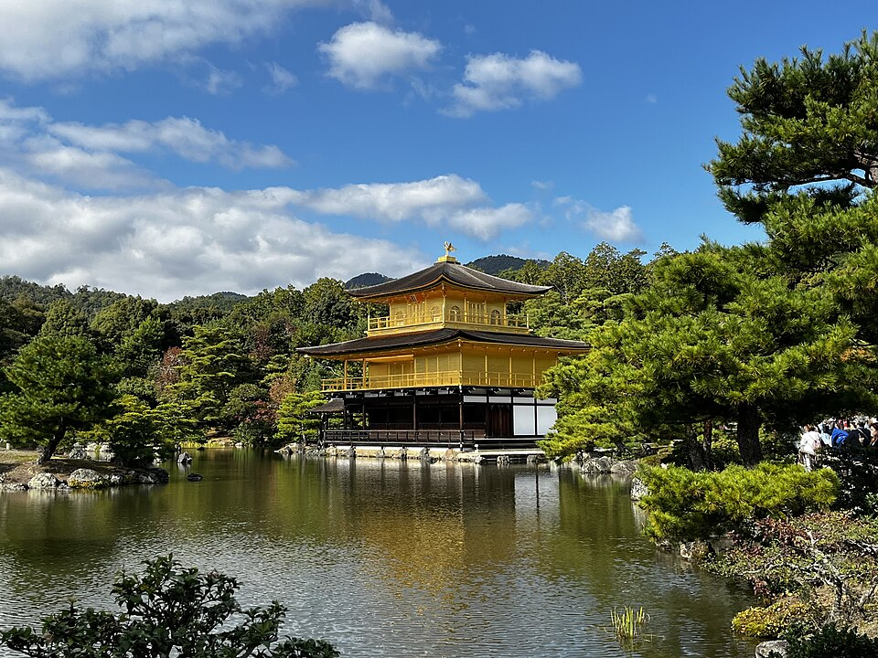
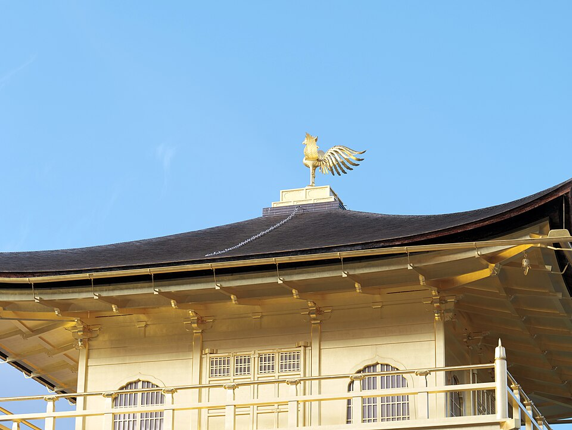
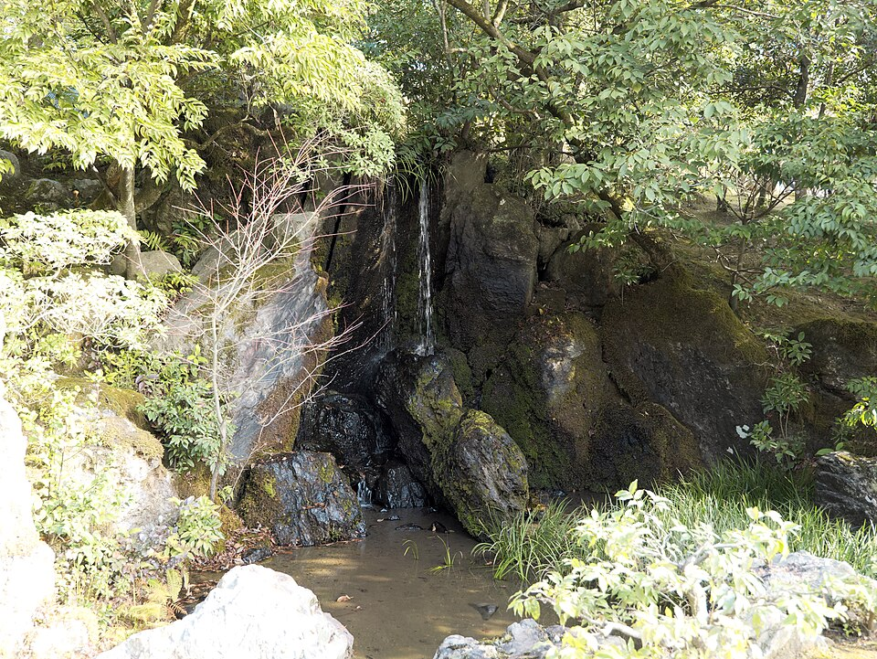
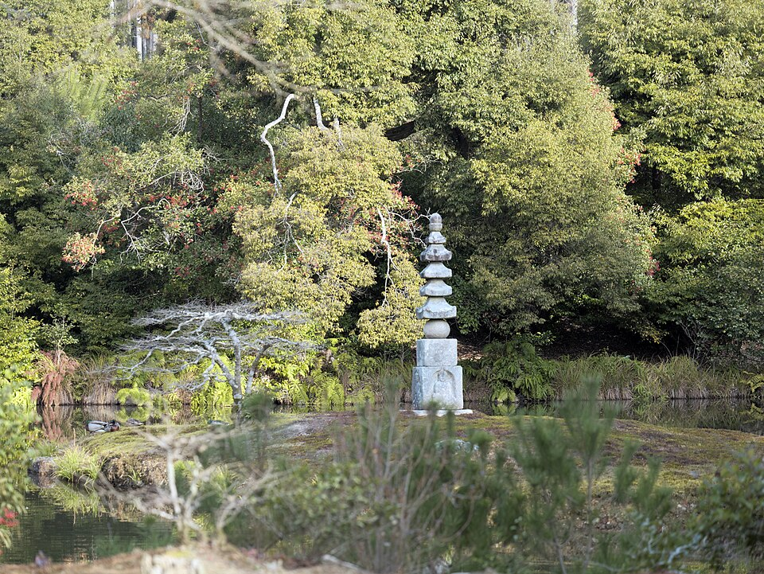
📴 離線時看不到地圖，回到有網路的地方再開，或用下方的地圖連結。
地圖：© OpenStreetMap contributors，步行路徑由 OSRM 計算｜照片：Wikimedia Commons，作者與授權標在各張照片下方
從「金閣寺道」搭市巴士 101 或 102 系統往南到「北野天滿宮前」（約 6 分鐘），走到午餐的店。
北野天滿宮是全國約 12,000 間天滿宮・天神社的總本社。10/1～10/5 的瑞饋祭（北野祭）今天開始：13:00，三座御鳳輦（包括村上天皇寄進的第一鳳輦、一條天皇寄進的葱華輦）和劍鉾等組成的隊伍從本社出發，繞行氏子區域，16:00 抵達西ノ京的御旅所。
吃完午餐 12:40 回到本社前找位置看出發，之後可以跟著隊伍走一段，14:15 前到嵐電北野白梅町站（北野天滿宮步行約 5 分）。
⏱ 約 1.5 小時（12:40～14:15）｜🕐 7:00 開門｜🎫 境內免費｜📍 京都市上京區馬喰町
09:00 本社出御祭（這趟不排，早上留給金閣寺）→ 13:00 三座鳳輦隊伍從本社出發，繞行氏子區域 → 16:00 抵達西ノ京御旅所（着御祭、八乙女舞）。
祭典攤販只擺在西ノ京的御旅所（傍晚到 22 點左右）；晚上 20:00 的夜間行程選方案 E 就能去。
隊伍 16:00 抵達御旅所的着御祭、八乙女舞，和嵐山的夕陽時間重疊，這個行程選了嵐山；晚上夜間行程選方案 E 去御旅所的話，鳳輦和ずいき神轎都還在。想看儀式的話，嵐山要縮短、16:00 前到 JR 円町站。
導遊型交通指引：
- 北野天滿宮步行約 5 分到嵐電「北野白梅町站」
- 搭嵐電北野線到「帷子ノ辻」，轉嵐山本線到「嵐山站」（共約 24 分鐘，IC ¥250）
嵐山從平安時代起就是京都的賞景勝地，春天櫻花、秋天楓葉。照下面的順路走一圈，最後在渡月橋看日落（17:42）。
- 14:50天龍寺（世界遺產）— 曹源池庭園（16:50 停止受理，高中以上 ¥500）；法堂天井的「雲龍圖」秋季 9/19～12/6 每天開放（16:20 停止受理，另收 ¥500）。看完從北門出去
- 15:45野宮神社 — 用不剝皮的麻櫟原木做成的「黑木鳥居」；境內自由參拜
- 15:55竹林小徑 — 從野宮神社往西，經天龍寺北側到大河內山莊，約 400m
- 16:20龜山公園頂上展望台 — 西側可以眺望保津峽，從公園步道往上走
- 17:15渡月橋 — 在橋上或河岸等日落
- 17:50過渡月橋走到阪急嵐山站（約 10 分）
⏱ 約 3 小時（14:45～17:50）｜🌇 日落 17:42｜📍 嵐電嵐山站進、阪急嵐山站出｜步行共約 3.3 km
庭園 16:50、法堂「雲龍圖」16:20 就停止受理，所以一到嵐山先進天龍寺。
這是平地的計算值；西邊是山，太陽可能會早一點被山擋住，17:15 前到渡月橋比較保險。
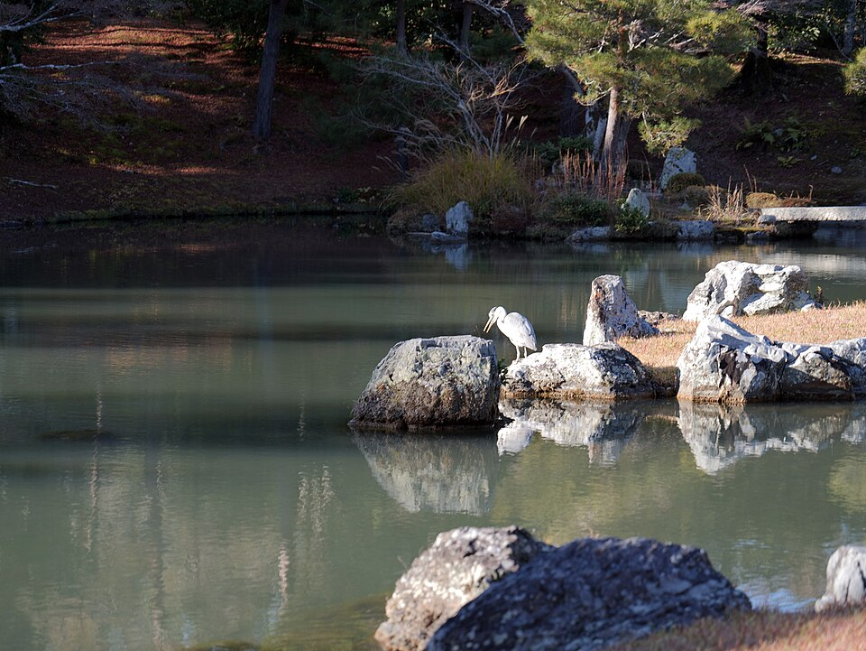
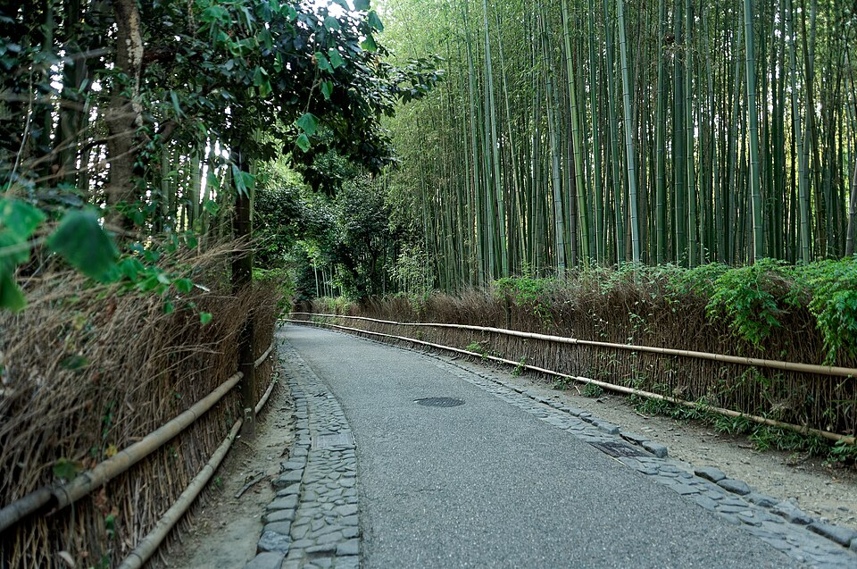
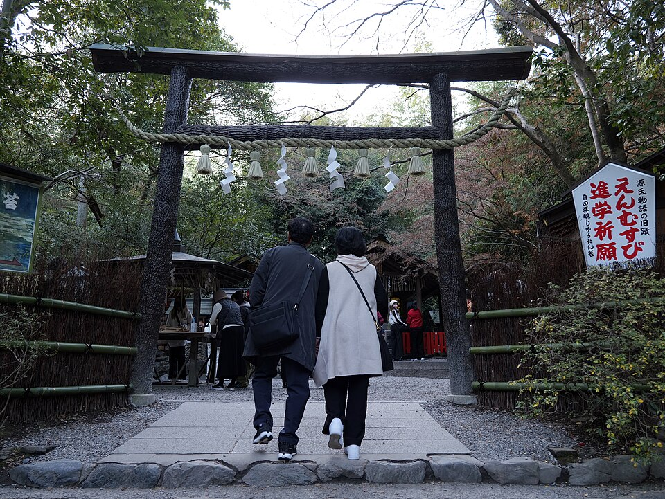
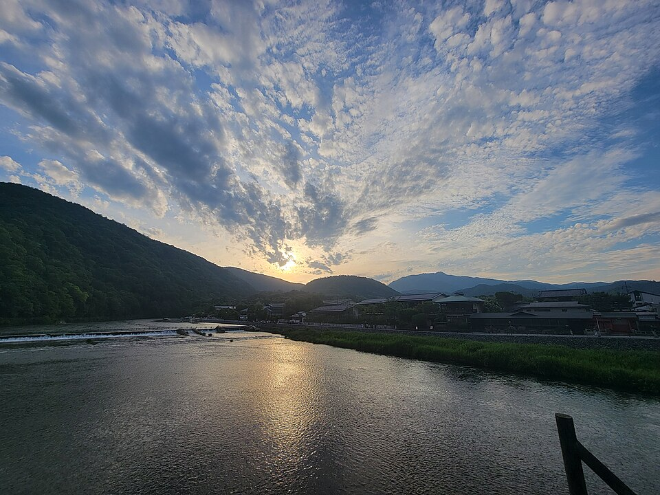
📴 離線時看不到地圖，回到有網路的地方再開，或用下方的地圖連結。
地圖：© OpenStreetMap contributors，步行路徑由 OSRM 計算｜照片：Wikimedia Commons，作者與授權標在各張照片下方
導遊型交通指引：
- 過渡月橋到中之島，經嵐山公園走到阪急嵐山站（約 10 分鐘）
- 搭阪急嵐山線到「桂站」，轉阪急京都本線到終點「京都河原町站」（共約 24 分鐘，IC ¥240）
- 出站就是四條河原町、木屋町一帶，18:30 吃晚餐
📍 今日相關地圖
Day 7｜10月2日（五）
清水寺、敘敘苑與河原町採購
導遊型交通指引：
- 在京都車站前搭乘 206 號公車至「清水道」或「五條坂站」下車
- 車程約 15 分鐘
- 再步行約 10 分鐘上山至清水寺
清水寺 6:00 就開門，一早人最少。從五條坂走上去，逛完本堂、奧之院、音羽瀑布後，沿三年坂、二年坂一路往下走到八坂塔，再到清水道搭公車回京都站。
- 08:55仁王門 — 清水寺的正門；旁邊是高約 30m、國內最大級的三重塔
- 09:05本堂・清水舞台（國寶）— 建在音羽山的斷崖上，1633 年重建
- 09:35奧之院 — 在音羽瀑布正上方，回頭就是清水舞台的全景
- 09:45音羽瀑布 — 分成三道落下的清水，用長柄杓接來祈願
- 10:10三年坂（產寧坂） — 出寺沿清水坂往下，轉進石階的三年坂
- 10:20二年坂（二寧坂） — 接在三年坂下面往北；這一帶是國家選定的重要傳統建造物群保存地區
- 10:35八坂塔（法觀寺五重塔，高 46m）與旁邊的八坂庚申堂 — 掛滿手腳被綁住的「くくり猿」，意思是約束慾望；9:00～17:00、免費
- 10:55走到清水道，11:00 搭市巴士 206 系統回京都站
⏱ 約 2 小時（08:50～11:00）｜🕐 清水寺 6:00-18:00｜🎫 門票 ¥500（小・中學生 ¥200）｜📍 地址：京都市東山區清水一丁目｜步行共約 2.8 km
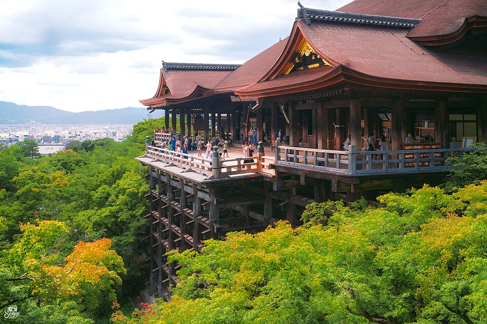
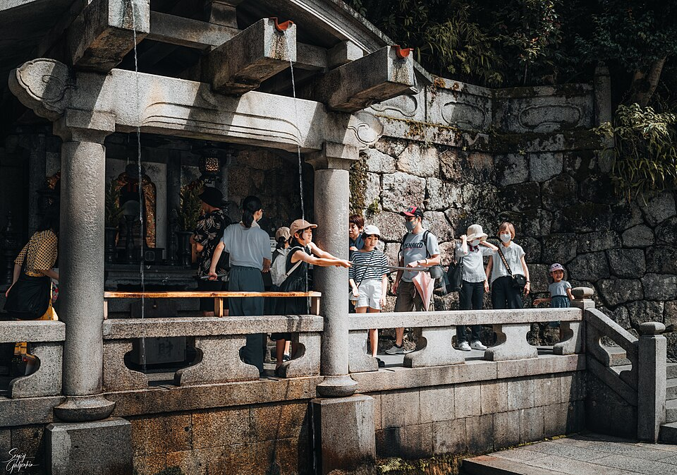
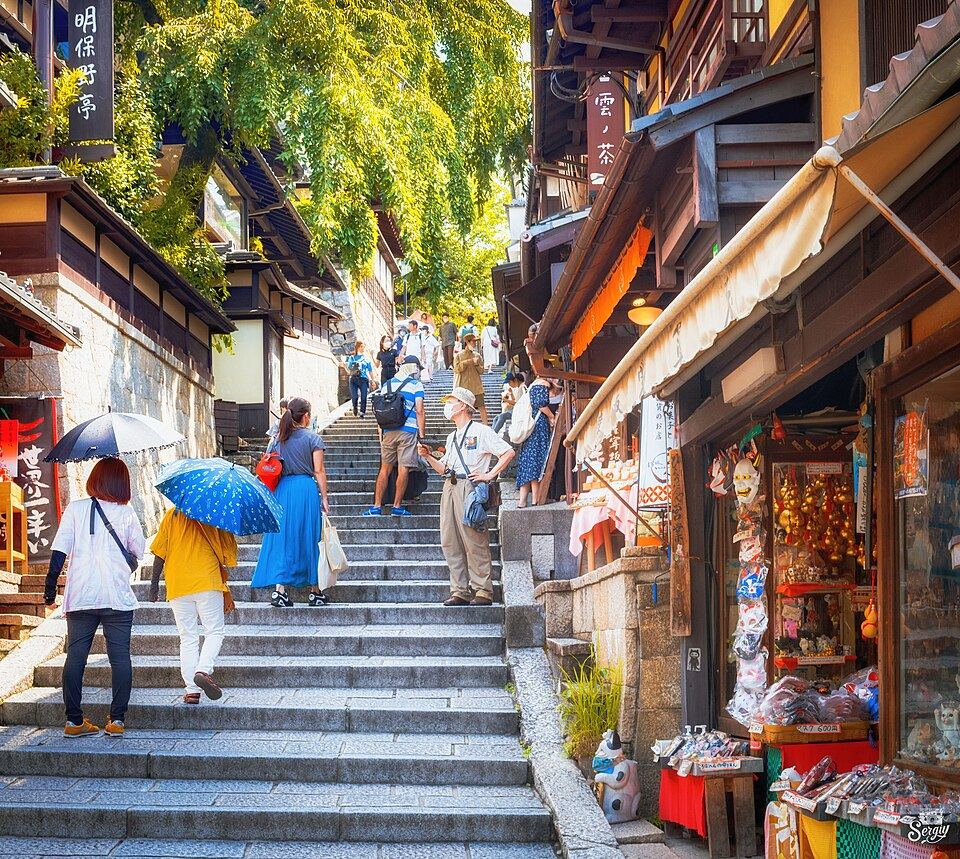
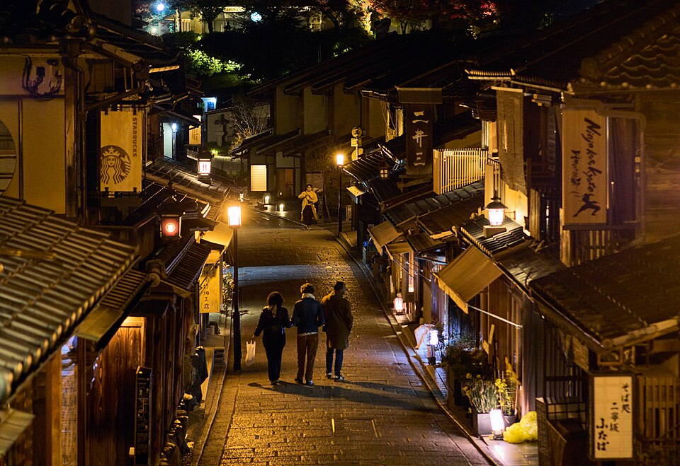
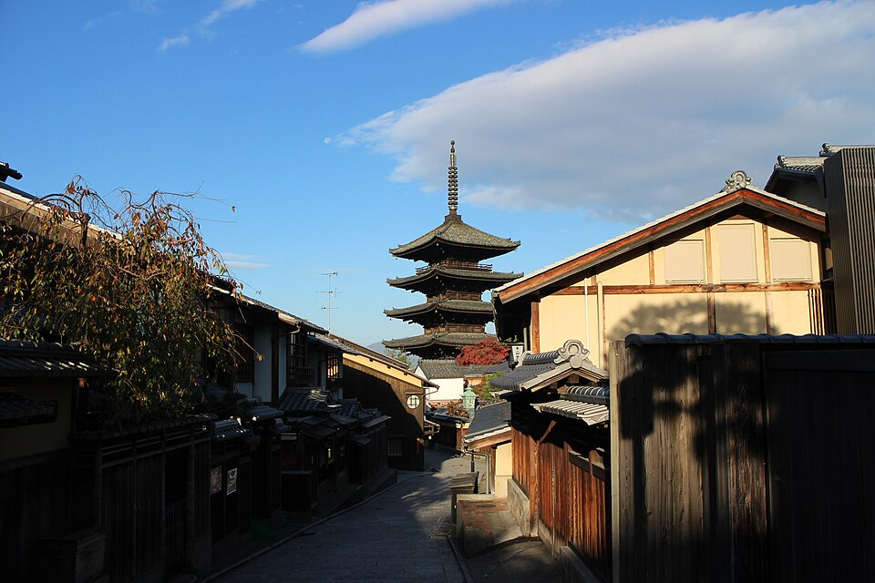
📴 離線時看不到地圖，回到有網路的地方再開，或用下方的地圖連結。
地圖：© OpenStreetMap contributors，步行路徑由 OSRM 計算｜照片：Wikimedia Commons，作者與授權標在各張照片下方
從「清水道站」搭乘 206 號公車直接返回京都車站（約 22 分鐘，¥230；10/2 班次例：11:01 → 11:23 京都駅前）。
超人氣燒肉餐廳，位於伊勢丹百貨 7 樓，透過落地窗可欣賞京都塔美景
📍 地址：京都市下京區烏丸通鹽小路下東鹽小路町 JR伊勢丹 7F
🕐 11:00-23:00（Last Order 22:00）｜📞 075-341-8989
⭐ 已預約 11:30 時段｜官網：www.jojoen.co.jp
搭乘地鐵烏丸線至「四條站」，車程約 4 分鐘，出站後步行前往錦市場。
📍 今日相關地圖
Day 8｜10月3日（六）
滿載而歸
飯店退房，拉著行李步行至 JR 京都車站八条口（約 10-15 分鐘），再穿過車站走到 HARUKA 的 30 號月台。
📍 30 號月台在車站 1 樓西北角，和飯店所在的八条口（南側）是車站的兩端，帶行李請多抓約 10 分鐘
原本搭 09:30 的 HARUKA，10:50 才到關西機場。國際線報到櫃檯在起飛前 60 分鐘關閉，12:20 的班機就是 11:20 截止 —— 只剩 30 分鐘，HARUKA 若誤點就可能趕不上。而且 08:45 之後下一班就是 09:30，中間沒有其他班次可以補。
導遊型交通指引：
- 在 JR 京都車站 30 號月台搭乘 JR 特急 HARUKA，08:45 發車 → 10:04 抵達關西空港站（約 79 分鐘，免轉車）
- 出站後步行約 5 分鐘到第 1 航廈 4 樓國際線出發大廳
📅 班次依 2026/10/3（六）時刻表查證；出發前一週請再確認一次
持外國護照的短期旅客，京都 ⇄ 關西機場單程 ¥2,200，含普通車指定席，一年內有效。在日本國內買不到，必須先在台灣旅行社或 JR 西日本網站購買，到日本後再兌換。
① 早一班 HARUKA：08:20 → 09:34，時間最寬裕
② 機場利木津巴士：京都駅八条口（飯店這一側，不用穿過車站）08:00 → 第 1 航廈 09:28，單程 ¥2,800，行李放車底。往機場方向全車預約制（發車オーライネット或 075-682-4400），行車時間會受路況影響
③ 萬一 HARUKA 停駛，改搭②，或直接詢問站務員替代路線
抵達第 1 航廈 4 樓，辦理登機報到與行李託運，通過安檢、出境審查後，還有時間在免稅店最後採購。
⏱️ 10:05 抵達 ＝ 起飛前 2 小時 15 分；報到櫃檯 11:20 關閉
國際線保安檢查場在 2025/3 整併成一處、擴大面積並增加智慧通道（スマートレーン），整體改建於 2026 年夏季完工。網路上「關西機場安檢要排一小時、提早 3 小時到」的說法多半是 2023 年施工期間的經驗，現在提早約 2 小時抵達即可。
中華航空 CI 159｜起飛 12:20 → 抵達 14:15（飛行時間約 3hr55min）
🛫 愉快的關西之旅結束，期待下次再訪！